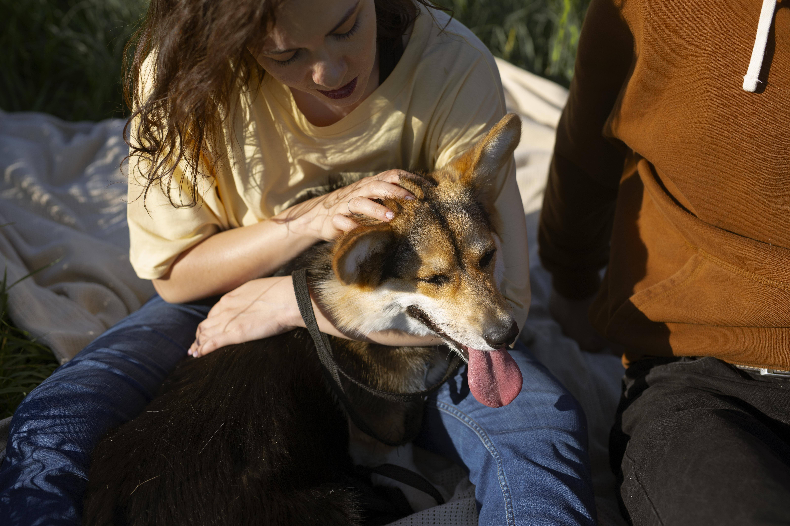
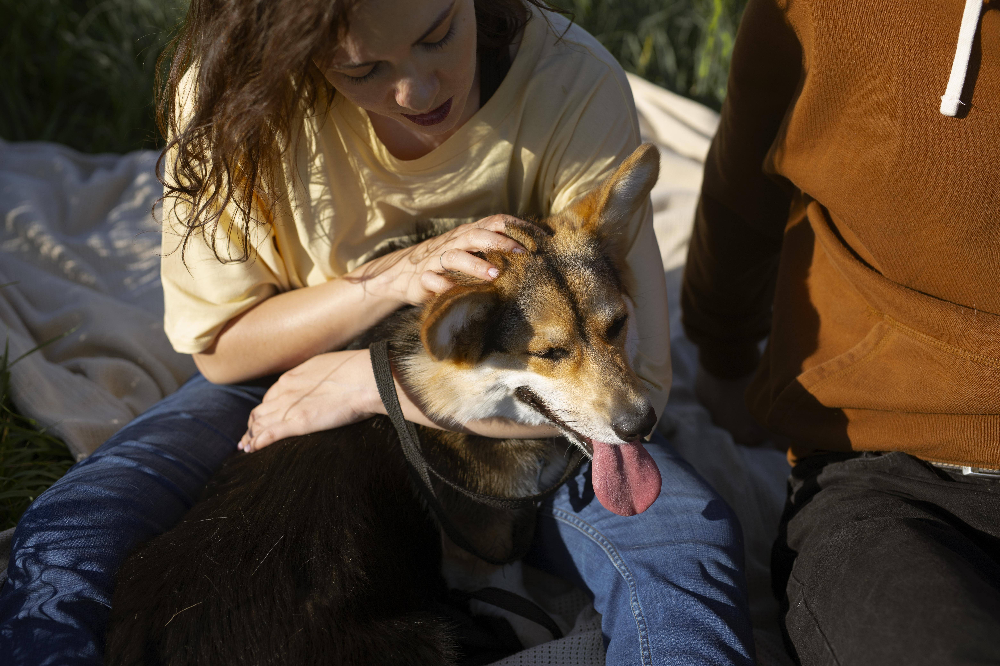
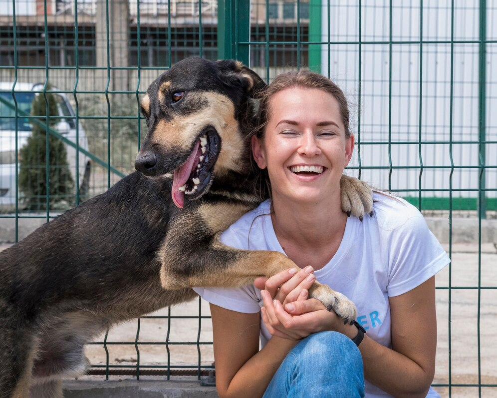
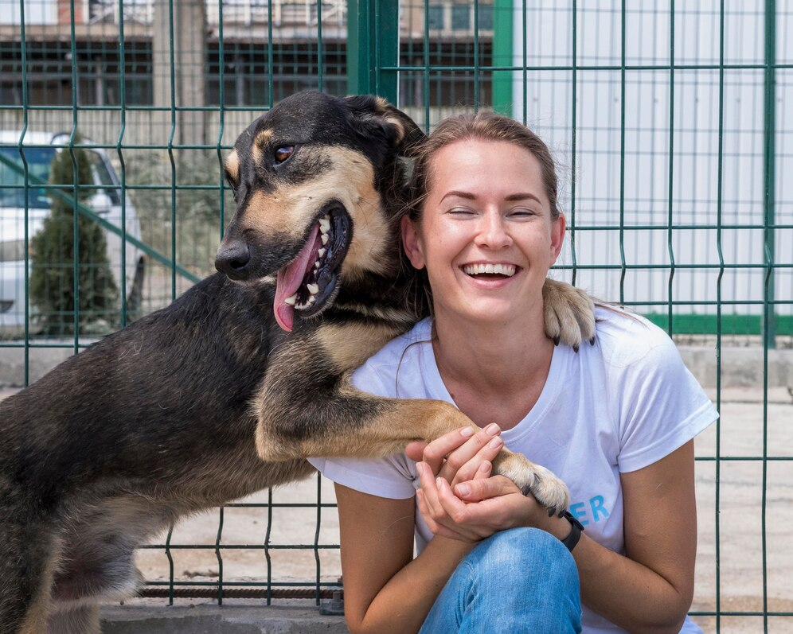

Amor y Adopción:
Transformando Vidas Juntas
En Huellitas de Amor, creemos en el poder transformador del amor incondicional que las mascotas brindan a nuestras vidas. Somos una comunidad comprometida con el bienestar animal y la adopción responsable.
Nuestro objetivo es conectar mascotas necesitadas con hogares amorosos, ofreciendo un refugio seguro mientras buscamos hogares permanentes. Cada adopción cambia vidas, promovemos esta hermosa aventura proporcionando recursos, educación y mucho amor.
Nosotros
En Huellitas de Amor, creemos que cada vida animal cuenta. Nuestra misión es encontrar hogares amorosos para mascotas necesitadas y fomentar la adopción responsable. Aquí te contamos un poco más sobre nosotros:
Nuestra Historia:
Fundada en el año 2010, Huellitas de Amor nació con la pasión por los animales y el deseo de marcar la diferencia en sus vidas.
Desde entonces, hemos trabajado incansablemente para rescatar, rehabilitar y encontrar familias para perros y gatos abandonados.
Nuestro Equipo:
Estamos formados por un equipo apasionado de voluntarios, veterinarios y amantes de los animales.
Juntos, dedicamos nuestro tiempo y esfuerzo para asegurar que cada mascota encuentre un hogar lleno de amor y cuidado.
Nuestro Compromiso:
Promovemos la adopción como la mejor opción para darle una segunda oportunidad a los peludos.
Realizamos eventos de adopción, campañas de esterilización y educación sobre tenencia responsable.
Cuidado y Compromiso:
Veterinarios y Voluntarios Trabajando Juntos
 

 

nete a nosotros en nuestro viaje hacia un mundo donde cada mascota es amada, respetada y cuidada. Juntos, podemos hacer una diferencia en las vidas de aquellos que nos dan tanto amor incondicional: 隆nuestros queridos amigos de cuatro patas!